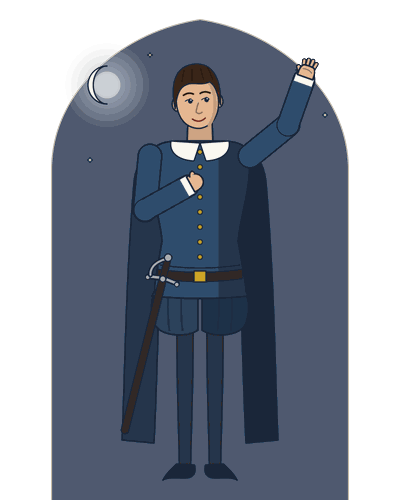
Romeo
Son of Montague, passionate and impulsive. He loves Rosaline, then Juliet; marries her, kills Tybalt, is banished and takes poison in her tomb.
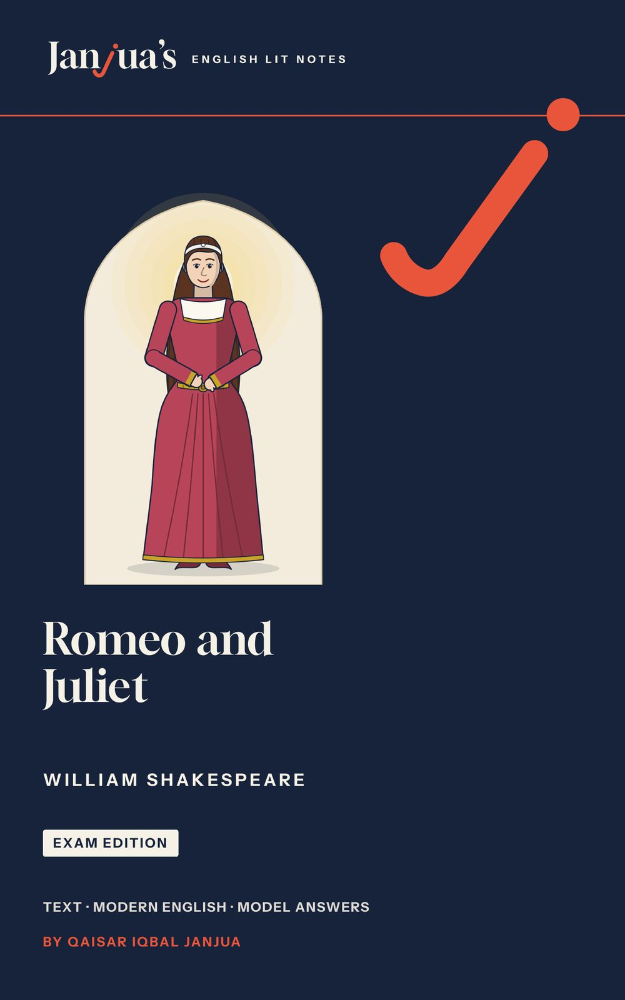
Romeo and Juliet is William Shakespeare’s tragedy of two young lovers from enemy families in Verona, who marry in secret and die within days. This Romeo and Juliet study guide gives you the complete play with a plain modern English line under every line of verse, the meaning of every prose speech, a unit for every scene or group of scenes, and the answers examiners look for.
The book is being prepared for Amazon now. Send one short email and you will hear as soon as it is out.
Email me when it is outThis opens your email app with a short message to qaisar@janjuaslitnotes.com already written: just press Send. Your email address is used only to tell you when this book is out. How your email is used.
Romeo and Juliet is a tragedy in five acts: Romeo, a Montague, and Juliet, a Capulet, fall in love at a feast, marry in secret, and are parted when Romeo kills Juliet’s cousin Tybalt and is banished. A plan to save them fails by a few hours, and both die in the Capulet tomb. Here is the whole play act by act, as the book sums it up.
The Chorus tells the whole story in a sonnet: two “star-cross’d lovers” (1.0.6) from enemy families will die, and their deaths will end the feud. In a street in Verona, servants of the Capulets and the Montagues fight; Tybalt joins in, and Prince Escalus threatens death to anyone who fights again. Romeo, Montague’s son, is lovesick for Rosaline. Paris asks Capulet for his daughter Juliet, who is not yet fourteen, and Capulet invites him to a feast. Romeo learns of the feast by chance and goes, masked, with Mercutio and Benvolio. There he sees Juliet and forgets Rosaline. Tybalt recognises Romeo’s voice, but Capulet forbids a fight. Romeo and Juliet meet, kiss, and learn that they are enemies.
Romeo climbs into Capulet’s orchard and hears Juliet at her window confess her love. They exchange vows, and she asks him to arrange their marriage. Friar Laurence agrees to marry them, hoping to end the feud. Tybalt sends Romeo a challenge. The Nurse carries messages, and that afternoon the Friar marries Romeo and Juliet in secret.
In the heat of the day Tybalt calls Romeo a villain. Romeo refuses to fight his new kinsman, so Mercutio fights instead and is killed under Romeo’s arm. Romeo kills Tybalt and is banished. Juliet hears the news from the Nurse and chooses loyalty to her husband. Romeo despairs in the Friar’s cell, until the Friar sends him to Juliet for one night before he leaves for Mantua. Capulet promises Juliet to Paris for Thursday. At dawn Romeo leaves. Juliet refuses to marry Paris; her father threatens to throw her out, her mother rejects her and the Nurse advises her to marry Paris.
The Friar gives Juliet a drug that will make her seem dead for forty-two hours; he will send for Romeo to meet her in the tomb. Juliet pretends to obey her father, who moves the wedding to the next morning. Alone, she drinks the drug. On her wedding morning the Nurse finds her “dead”, and the family mourns.
In Mantua, Balthasar tells Romeo that Juliet is dead. The Friar’s letter never reaches him, because Friar John was shut in by plague searchers. Romeo buys poison and goes to the tomb. There he kills Paris, drinks the poison and dies beside Juliet. She wakes, finds him dead and stabs herself. The Friar tells the whole story, and Capulet and Montague make peace over their children’s bodies.
Romeo and Juliet was first printed in 1597, in a short Quarto, and again in 1599 in a fuller one; the First Folio of 1623 reprinted a later Quarto. The play has five acts and 24 scenes, with a Prologue before Act 1 and before Act 2.
14 units, one for each scene or group of scenes, then the essays and the revision. Every unit follows the same plan, so you always know where to look.
The text is the Cambridge Shakespeare, edited by William George Clark and William Aldis Wright (Volume VII, Macmillan, 1865), with obvious misprints corrected. Every quotation and line number in the book is checked against it, and every quotation carries act, scene and line: 2.2.33 means Act 2, Scene 2, line 33, and 1.0.6 the sixth line of the first Prologue.
Paperback, 6 x 9 in, 410 pages, and a Kindle ebook.
On Kindle now
Unit 5: The Balcony Scene: “Wherefore Art Thou Romeo?”, complete, with the title page, A Note from the Author and the contents.
Every line of the play’s verse has a plain modern English line under it, and the hard words are explained after the passage. This is Juliet’s question to Romeo in the balcony scene, as the book prints it.
“If you have opened this book, you probably have an exam coming, and a play that everyone thinks they know. Romeo and Juliet is the most famous love story in the world, but it is also a fast, crowded, surprising play: street fights, a masked feast, a secret wedding, two deaths in one afternoon, a sleeping drug and a tomb. None of it needs to frighten you. You need to know what is happening, why the characters act as they do, and how to write about it well.”
Juliet asks Romeo to give up his name Act 2, Scene 2 · Lines 33 to 36
O Romeo, Romeo! wherefore art thou Romeo?
Oh Romeo, Romeo! Why are you Romeo?
Deny thy father and refuse thy name;
Reject your father and refuse your name;
Or, if thou wilt not, be but sworn my love,
Or, if you will not, just swear you love me,
And I’ll no longer be a Capulet.
And I will no longer be a Capulet.
Words33 wherefore: why (not where)
The book gives one unit to each scene or group of scenes: 14 units in all, from the Prologue and the fight in the street to the tomb. Each line below is the book’s own summary of the scene.
The Chorus tells the whole story. A street fight breaks out, the Prince threatens death, and Romeo pines for an unwilling woman.
Capulet tells Paris to wait and woo Juliet. By chance Romeo learns of Capulet’s feast. Lady Capulet and the Nurse tell Juliet about Paris.
Romeo goes masked to the feast, too sad to dance. Mercutio mocks dreams with Queen Mab; Romeo fears the night will bring his death.
Romeo sees Juliet and forgets Rosaline. Capulet stops Tybalt from fighting him. The lovers meet, kiss, and learn that they are enemies.
Romeo climbs into Capulet’s orchard and hears Juliet confess her love at her window. They exchange vows and plan to marry.
The Friar gathers herbs that can heal or kill. Romeo asks him to marry him to Juliet, and he agrees, hoping to end the feud.
Mercutio mocks the Nurse, who brings Juliet’s message. Juliet waits impatiently for news, and the Friar marries the lovers in secret.
Romeo refuses Tybalt’s challenge, so Mercutio fights and dies. Romeo kills Tybalt in revenge, and the Prince banishes him.
Juliet hears that Romeo has killed Tybalt and chooses loyalty. Romeo despairs at his banishment until the Friar sends him to Juliet.
Romeo leaves at dawn. Juliet refuses to marry Paris; her father threatens to throw her out, and the Nurse advises her to obey.
The Friar gives desperate Juliet a drug that will make her seem dead. She pretends to obey, and her father hurries the wedding.
Alone, Juliet faces her fears and drinks the drug. On her wedding morning she is found seemingly dead, and the family mourns.
In Mantua Romeo hears that Juliet is dead and buys poison. The Friar’s letter never reached him, because of the plague.
Romeo kills Paris and takes poison beside Juliet. She wakes, finds him dead and stabs herself. The fathers make peace.
Romeo and Juliet turns on two families, the Montagues and the Capulets, and the friends and helpers who take a side. The book has fourteen drawings in one house style; here they are with the book’s own notes on each.

Son of Montague, passionate and impulsive. He loves Rosaline, then Juliet; marries her, kills Tybalt, is banished and takes poison in her tomb.
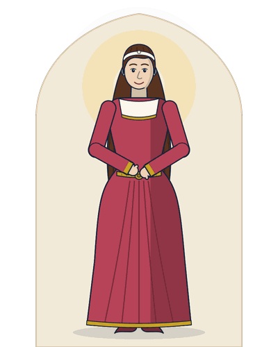
Only daughter of Capulet, not yet fourteen. She marries Romeo in secret, refuses Paris, takes the Friar’s drug and stabs herself in the tomb.
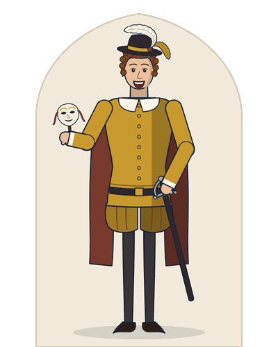
Kinsman of the Prince and Romeo’s witty friend. He mocks love and dreams, fights Tybalt for Romeo and dies cursing both houses.
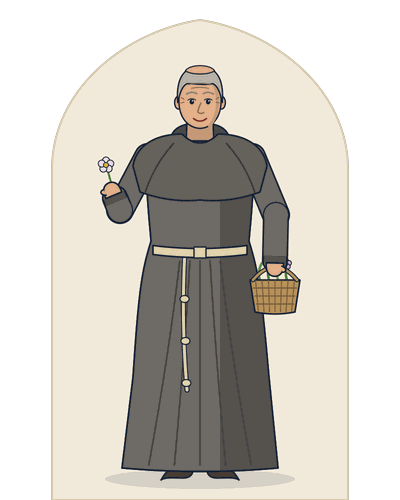
A Franciscan friar, Romeo’s adviser. He marries the lovers, plans Juliet’s false death and arrives at the tomb too late.
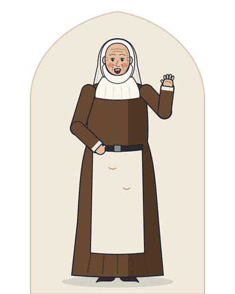
Juliet’s nurse since birth, comic and loving. She helps the marriage but later advises Juliet to marry Paris.
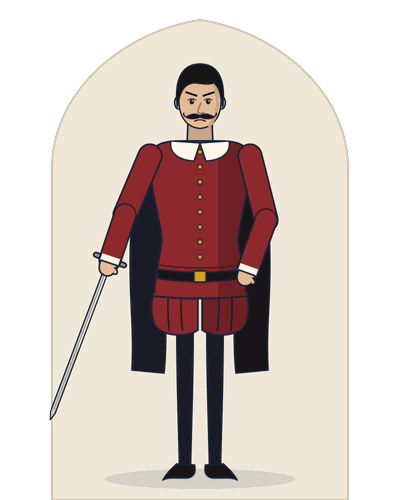
Lady Capulet’s nephew, a fierce swordsman who hates all Montagues. He kills Mercutio and is killed by Romeo.
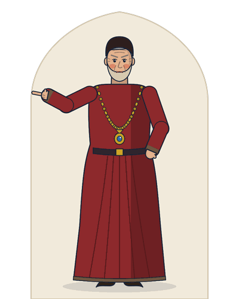
Juliet’s parents. Capulet is genial and proud but furious when crossed; his wife is formal and cold.
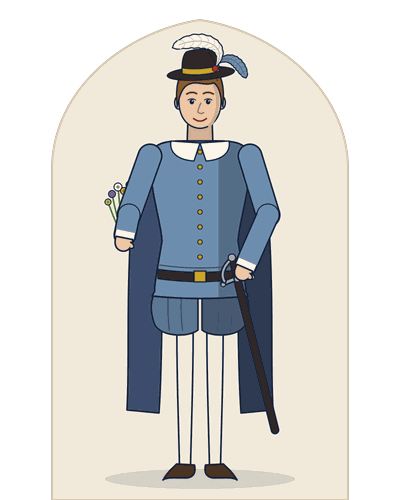
A young count, kinsman of the Prince, who wishes to marry Juliet. Romeo kills him at the tomb.
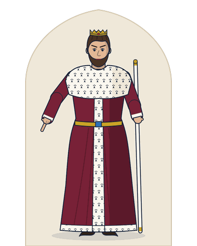
Ruler of Verona, who banishes Romeo and judges the families at the end.
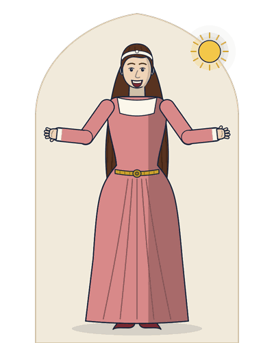
Mercutio mocks the Nurse, who brings Juliet’s message. Juliet waits impatiently for news, and the Friar marries the lovers in secret.
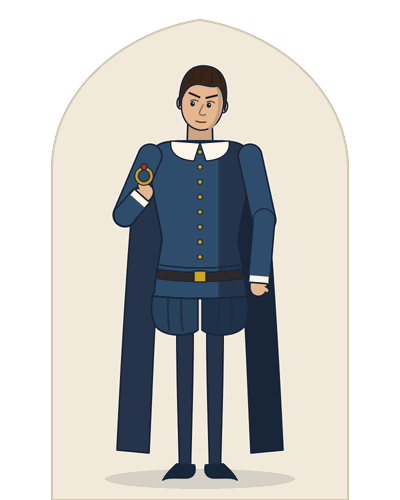
Juliet hears that Romeo has killed Tybalt and chooses loyalty. Romeo despairs at his banishment until the Friar sends him to Juliet.
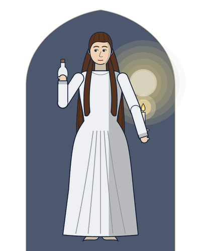
Alone, Juliet faces her fears and drinks the drug. On her wedding morning she is found seemingly dead, and the family mourns.
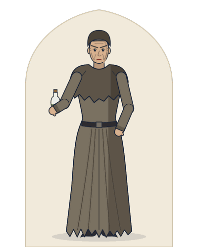
In Mantua Romeo hears that Juliet is dead and buys poison. The Friar’s letter never reached him, because of the plague.
Romeo kills Paris and takes poison beside Juliet. She wakes, finds him dead and stabs herself. The fathers make peace.
These are thirteen of the forty key passages in the book’s passage bank, each with its speaker, its act, scene and line in the Cambridge text, and the first thing the book says about why it matters.
| Passage | Speaker and line | Why it matters |
|---|---|---|
| “A pair of star-cross’d lovers take their life;” | The Chorus.1.0.6 | The theme of fate in one line. |
| “O brawling love! O loving hate!” | Romeo1.1.174 | His oxymorons show a love that is all words; they also join love and hate, the two forces of the play. |
| “O, she doth teach the torches to burn bright! / It seems she hangs upon the cheek of night” | Romeo1.5.42-43 | The first great image of light against darkness, and the moment he forgets Rosaline. |
| “My only love sprung from my only hate! / Too early seen unknown, and known too late!” | Juliet1.5.136-137 | Love and hate in one couplet; the feud now stands between them. |
| “But, soft! what light through yonder window breaks? / It is the east, and Juliet is the sun!” | Romeo2.2.2-3 | Juliet as the sun: light imagery at its height. |
| “What’s in a name? that which we call a rose / By any other name would smell as sweet;” | Juliet2.2.43-44 | She argues that the feud is only words; the play shows that names can still kill. |
| “Wisely and slow; they stumble that run fast.” | Friar Laurence2.3.94 | The play’s warning against haste, which nobody, not even the Friar, obeys. |
| “These violent delights have violent ends / And in their triumph die, like fire and powder” | Friar Laurence2.6.9-10 | Love and destruction joined; the lovers will die “with a kiss”. |
| “A plague o’ both your houses!” | Mercutio3.1.87 | He blames both families; his curse is fulfilled when plague stops the Friar’s letter. |
| “O, I am fortune’s fool!” | Romeo3.1.132 | He sees himself as chance’s plaything; fate and his own fury work together. |
| “Hang thee, young baggage! disobedient wretch!” | Capulet3.5.160 | The father who asked for her consent in Act 1 now threatens to throw her out. |
| “Romeo, I come! this do I drink to thee.” | Juliet4.3.58 | Love overcomes terror; the toast echoes Romeo’s “Here’s to my love!” (5.3.119) in the tomb. |
| “O happy dagger! / This is thy sheath; there rust, and let me die.” | Juliet5.3.169 | Her last words; decisive and brave. |
The book answers the twelve questions examiners set most often on Romeo and Juliet with twelve model essays. Each is written in full for long papers, with a marked cut line where a shorter answer can stop. These are the topics:
Four pages as they appear in the book: the title page, a scene card, a page of text with modern English, and a critical note. Select a page to see it larger.
Short, direct answers taken from the Romeo and Juliet study guide itself.
Yes. It prints the complete play from the Cambridge Shakespeare, edited by William George Clark and William Aldis Wright (Volume VII, Macmillan, 1865), in 14 units, one for each scene or group of scenes, with both Prologues. Under every line of verse there is a plain modern English line; where a speech is in prose, the modern English follows it as one paragraph.
Yes. Every line of verse has a plain modern English line beneath it, and every prose speech is followed by its meaning in modern English. “O Romeo, Romeo! wherefore art thou Romeo?” (2.2.33), for example, becomes “Oh Romeo, Romeo! Why are you Romeo?”.
The book follows six themes through the play: love (love and desire), the feud (conflict, hate and violence), fate (fate, chance and the stars), time (time and haste), light (light and darkness) and family (parents, children and authority). Every point on a scene card carries its theme tag, and the tag names the essays it serves: love leads to Essays 1, 2 and 6, the feud to Essays 3 and 7, fate to Essays 8 and 12, time to Essay 9, light to Essay 10, and family to Essays 5 and 11.
The book’s twelve model essays answer the Romeo and Juliet questions examiners set most often: character sketches of Romeo, Juliet, Mercutio, Friar Laurence and the Nurse, then the themes of love, conflict and the feud, fate and chance, time and haste, light and darkness, parents and children, and the question of who is to blame for the tragedy. Each essay is written in full for long papers, with a marked cut line where a shorter answer can stop.
Tybalt kills Mercutio, under Romeo’s arm (3.1.99). Romeo kills Tybalt (3.1) and Paris (5.3.72), then drinks the apothecary’s poison (5.3.119-120). Juliet stabs herself with Romeo’s dagger (5.3.169). Lady Montague dies offstage, of grief at Romeo’s exile (5.3.209-210).
Not always. The book keeps the line numbers of the Cambridge text of 1865, which numbers lines differently from some modern editions, above all in prose. The two Prologues are numbered as scene 0 of Acts 1 and 2, so 1.0.6 means the sixth line of the first Prologue. Examiners name passages by act and scene, so know each passage by its sense as well as by its number.
No single person, the book argues. The feud between the families is the root cause; fate and chance supply the fatal accidents; and the haste of the lovers, their parents and their helpers turns danger into disaster. The play spreads the blame widely, as the Prince does at the end.
The free PDF sample has the title page, A Note from the Author, the contents and the whole of Unit 5: The Balcony Scene: “Wherefore Art Thou Romeo?”, as it appears in the book.